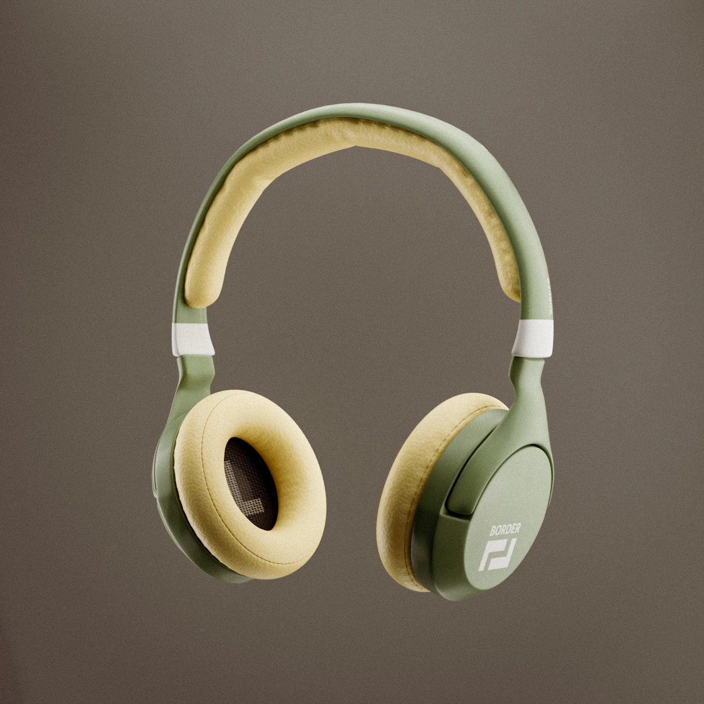
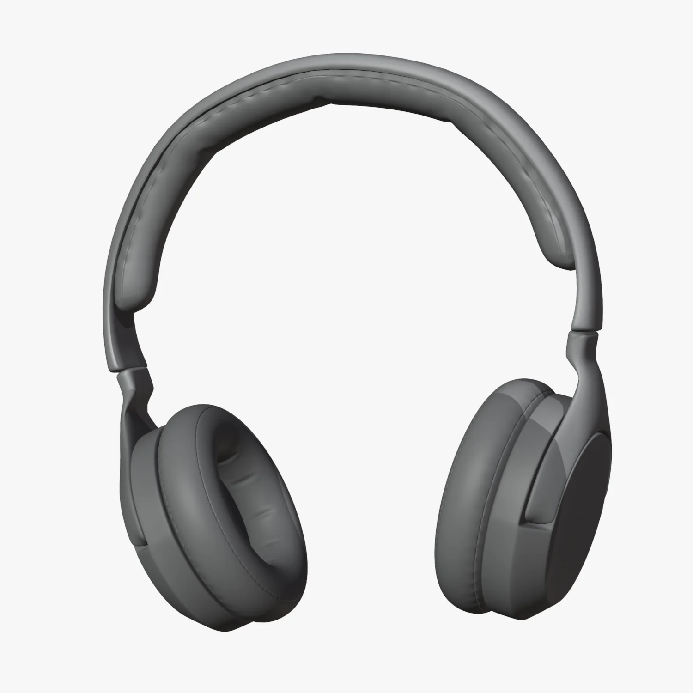
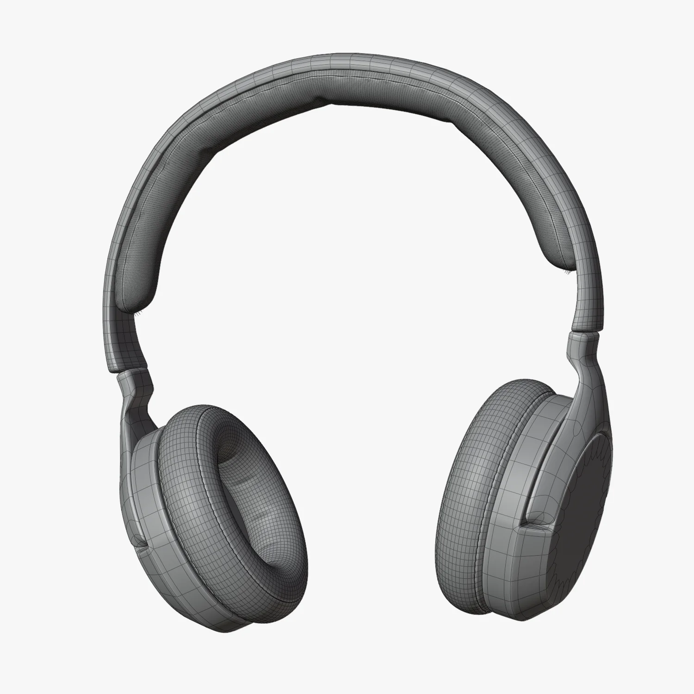
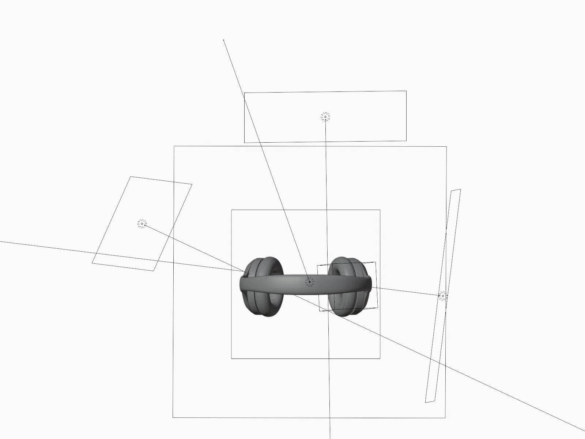
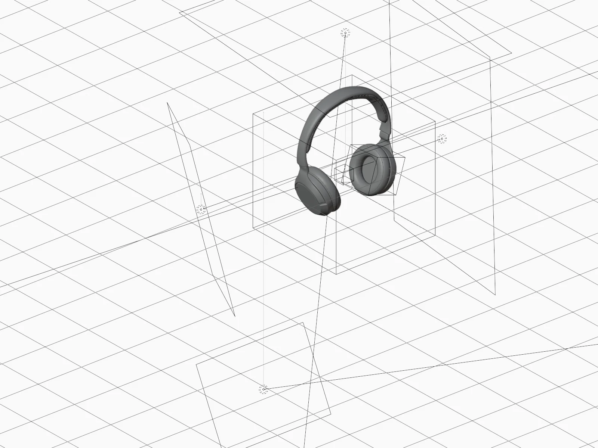

07 · Product visualization
Border — Headphones

Consumer product visualization. Focus on soft-goods shading — the fabric ear cushions and matte plastic had to read as clearly different materials on a neutral background, with no scene to hide behind.
Modeled, shaded, lit and rendered in Blender.
Includes a 10-second turntable animation and a full breakdown: clay, wireframe and the four-light setup from two angles. The model is ~7k base polygons driven by bevel + subdivision + mirror — light mesh, controlled by modifiers rather than brute force.
Process



